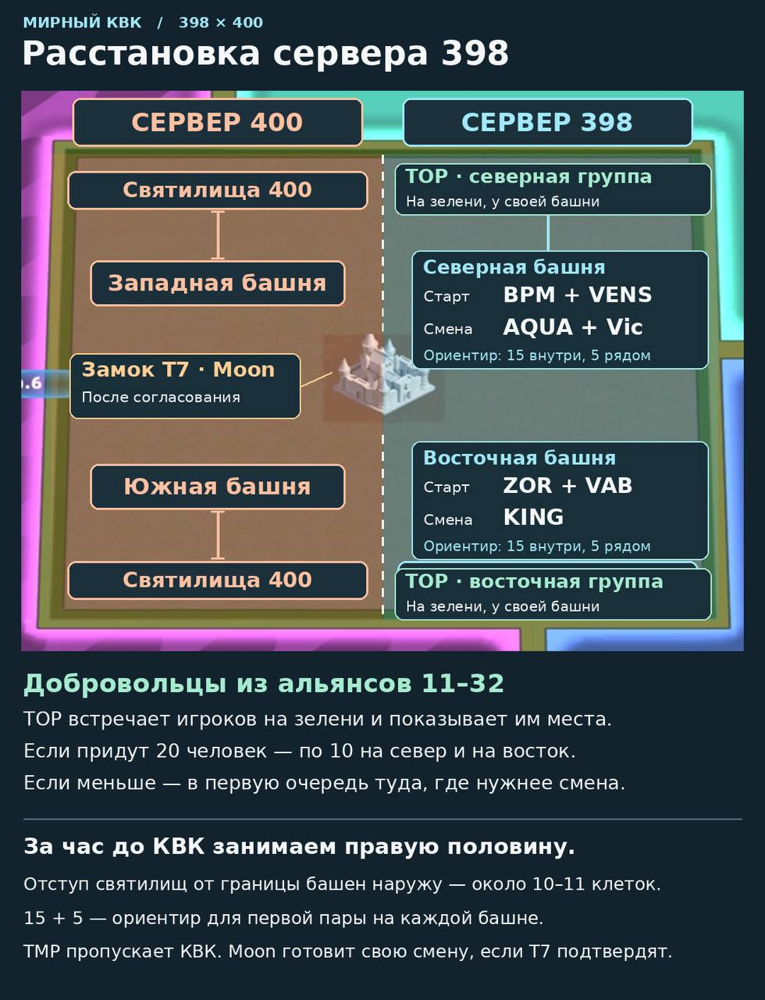
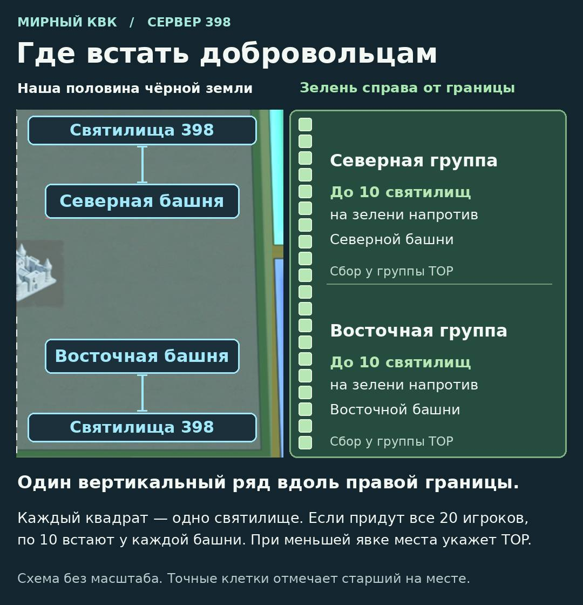

Занимаем позиции за час до начала КВК. Чёрную землю делим 50/50. Наша половина — справа на карте, за нами Северная и Восточная башни. Левая половина, Западная и Южная башни — за 400-м. Святилища ставим у своей башни, ориентир по карте — 10–11 клеток от границы башни наружу.
Альянсы: BPM, VENS, AQUA и Vic.
Альянсы: ZOR, VAB и KING.
На каждую башню ориентир для стартовой пары — 15 полных отрядов в гарнизоне и ещё 5 рядом, готовых зайти на подмену. Это общий состав от двух альянсов. Точное число уточняем по онлайну и вместимости башни.
Предлагаю закрепить центр за Moon, со своим гарнизоном и сменой. Окончательное решение объявим после подтверждения условий по Т7 с 400-м.
Поддержка обоих флангов. Одна группа встаёт на зелени у Северной башни, вторая — у Восточной.
TOP встречает добровольцев из альянсов 11–32 и показывает им места. Если соберутся около 20 человек, распределяем примерно по 10 на фланг. Если меньше — направляем туда, где нужнее поддержка. TMP этот КВК пропускает.
Соблюдаем договорённости с 400-м. При нарушении ответные действия направляем только на конкретного игрока. По перемирию на время КВК предлагаю каждому альянсу договориться со своим соперником по дуэли.
TOP, за вами правая сторона карты. Поставьте по одному координатору напротив каждой нашей башни: одного у Северной, второго у Восточной. До начала расстановки скиньте в НАП их ники и две игровые метки, чтобы лидеры альянсов 11–32 могли направить к вам своих ребят.
За час до КВК встречайте добровольцев у меток и показывайте каждому следующую свободную клетку. Святилища ставим в один вертикальный ряд на зелени вдоль правой границы чёрной земли. Северная группа заполняет верхнюю часть ряда, восточная — нижнюю. Если придут условно 20 человек, ставим примерно по 10 у каждой башни. Если людей меньше, координаторы сверяются между собой и направляют следующих туда, где нужнее помощь.
Во время КВК добровольцы держат своё место и остаются на связи со своим координатором. Если башне нужна помощь или смена, старший башни пишет координатору TOP, а тот называет конкретных игроков и точку сбора. Так остальные спокойно держат свой участок.
Если кто-то замечает нарушение перемирия, отправляет координатору ник, координаты и скрин. TOP передаёт информацию в НАП.


Р4/Р5, отпишитесь в НАП одной строкой по следующему шаблону: